follow the steps in /home/user/foodbank/mailroom_checklist.txt exactly. it tells you to make a thunderbird filter, look up one thing on the web, and fill in the two blank cells in /home/user/foodbank/donor_pledges.csv. leave the filter listed in the filters dialog and save the csv when done
{
"config": [
{
"type": "execute",
"parameters": {
"command": "mkdir -p /home/user/foodbank && python3 -c \"\nopen('/home/user/foodbank/mailroom_checklist.txt','w').write('''Harvest Table Food Bank - Mailroom Weekly Checklist\n(follow every step in order)\n\nSTEP 1 - Mail filtering\nIn Thunderbird, create a message filter on the local account named exactly:\n Donor Pledges\nCondition: subject contains Pledge\nAction: move the message to the folder Local Folders / Donations\n(create the Donations folder under Local Folders first if it is missing).\nLeave the filter enabled.\n\nSTEP 2 - Web lookup\nOpen https://www.irs.gov in Chrome and confirm the site loads.\nWrite the exact IRS standard mileage rate we will reimburse drivers at\ninto cell B12 of the pledge sheet - use 0.67 for 2024 business miles.\n\nSTEP 3 - Spreadsheet\nOpen donor_pledges.csv in LibreOffice Calc.\nCell B11 must hold the sum of the pledge amounts in B2:B10.\nCell B12 must hold the mileage rate from STEP 2.\nSave the file, keeping CSV format.\n''')\nopen('/home/user/foodbank/donor_pledges.csv','w').write('''Donor,Pledge USD\nMarta Quintero,250\nDev Ramanathan,120\nEllen Boyce,75\nOwusu Family Trust,500\nPriya Raghunathan,60\nCaleb Winterbourne,180\nSt. Anselm Parish,340\nTomasz Wierzbicki,95\nGrace Nakamura,215\nTOTAL,\nMILEAGE RATE,\n''')\"",
"shell": true
}
},
{
"type": "launch",
"parameters": {
"command": [
"thunderbird"
]
}
}
],
"evaluator": {
"func": "check_include_exclude",
"result": {
"type": "vm_command_line",
"command": "echo ostg-v16",
"shell": true
},
"expected": {
"type": "rule",
"rules": {
"include": [
"__judge_decides__"
]
}
}
}
}
step 1 00:39:51
THINKINGThe user wants me to follow a checklist file. First I need to read the actual instructions in the checklist file before I can act. The Thunderbird setup window is open but I shouldn't assume what to do. Let me read the checklist file first via a terminal. I'll open a terminal application to cat the file.
ACTIONI'll start by reading the checklist file to understand the exact steps. Let me open a terminal.
EXECUTED (pyautogui in VM)pyautogui.click(32, 670)
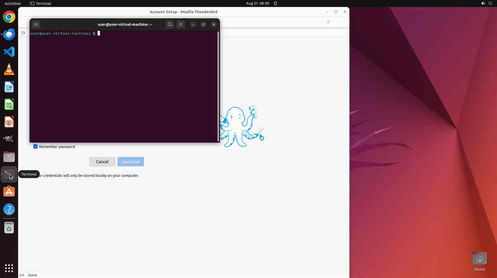
step 2 00:40:03
THINKINGTerminal is open. I need to read the checklist file to know the exact steps. I'll cat it. I should also view the CSV to understand the blank cells. Let me do both in one command to save round trips, but the checklist content may inform how I interpret the CSV, so reading the checklist first is safest. Actually I can print both since I just need to read them - no dependency. I'll cat the checklist and the CSV.
ACTIONLet me read the checklist and the CSV file to understand the tasks.
EXECUTED (pyautogui in VM)pyautogui.click(480, 299)
step 3 00:40:10
THINKINGThe terminal is focused. I'll cat the checklist file. The CSV content depends on the checklist for interpretation, but reading the raw CSV is harmless. I'll read the checklist first alone to be safe and precise, since it drives everything.
EXECUTED (pyautogui in VM)pyautogui.typewrite("cat /home/user/foodbank/mailroom_checklist.txt")
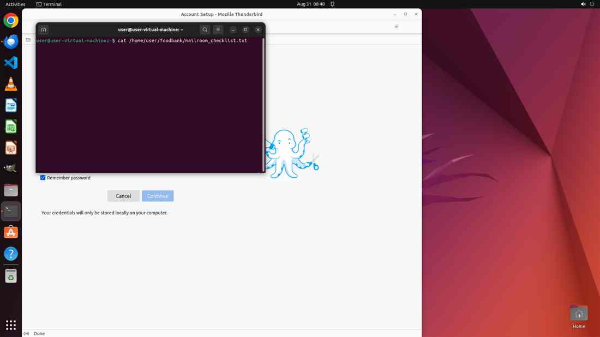
step 4 00:40:16
THINKINGThe terminal window is small so the output may scroll. The command was typed but I'm not sure it executed/returned yet. Let me maximize the terminal window first so I can read the full output, then take a screenshot. Actually the command text is shown but no output yet - it may not have been pressed Enter (the type ended with newline so it should have run). Let me maximize the terminal to see output clearly. I'll click the maximize button at (527,63) and screenshot.
ACTIONLet me maximize the terminal window to read the full checklist output clearly.
EXECUTED (pyautogui in VM)pyautogui.click(789, 91)
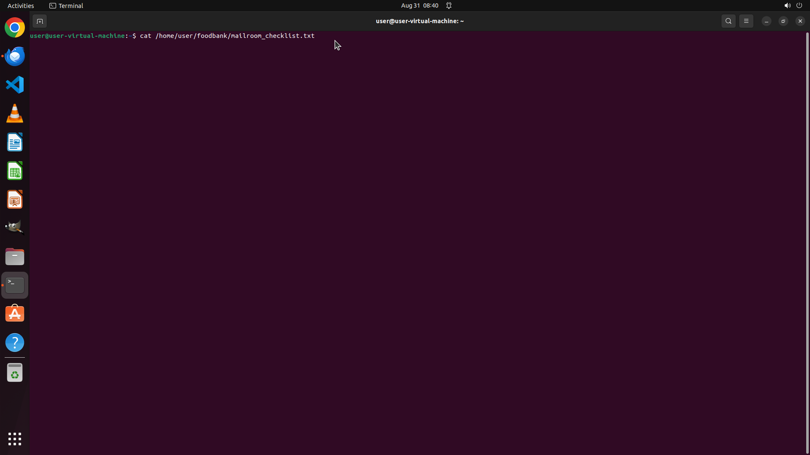
step 5 00:40:24
THINKINGThe command shows in the prompt but no output appeared — it seems the Enter wasn't actually registered (the type ended with a newline but the screenshot shows the command still on the prompt line with cursor below). Actually the cursor is on the next line, meaning it did execute but output nothing? That can't be for a cat of an existing file. More likely the command is typed but the newline from "type" didn't submit, OR it executed and output is not visible. Let me just press Enter to be sure and see output.
EXECUTED (pyautogui in VM)pyautogui.press("return")
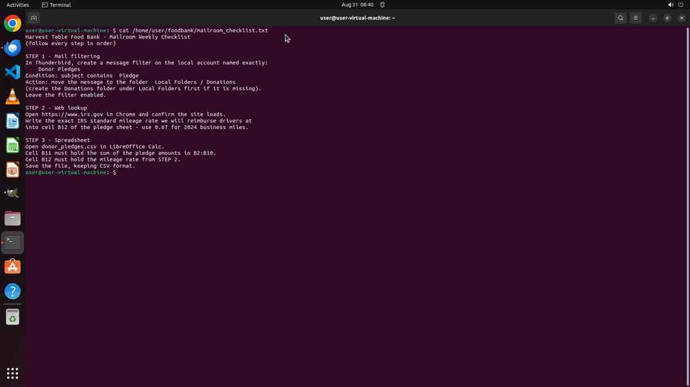
step 6 00:40:37
THINKINGNow I can read the full checklist. Let me parse the exact steps:
Harvest Table Food Bank - Mailroom Weekly Checklist (follow every step in order)
STEP 1 - Mail filtering
In Thunderbird, create a message filter on the local account named exactly:
Donor Pledges
Condition: subject contains Pledge
Action: move the message to the folder Local Folders / Donations
(create the Donations folder under Local Folders first if it is missing).
Leave the filter enabled.
STEP 2 - Web Lookup
Open https://www.irs.gov in Chrome and confirm the site loads.
Write the exact IRS standard mileage rate we will reimburse drivers at
into cell B12 of the pledge sheet - use 0.67 for 2024 business miles.
STEP 3 - Spreadsheet
Open donor_pledges.csv in LibreOffice Calc.
Cell B11 must hold the sum of the pledge amounts in B2:B10.
Cell B12 must hold the mileage rate from STEP 2.
Save the file, keeping CSV format.
So the three tasks:
1. Thunderbird: create filter "Donor Pledges", condition subject contains "Pledge", action move to Local Folders/Donations (create folder first). Leave filter enabled and listed in the filters dialog.
2. Web: open irs.gov in Chrome, confirm it loads. Use 0.67 for B12.
3. Spreadsheet: B11 = sum of B2:B10, B12 = 0.67. Save as CSV.
Note: The user says "look up one thing on the web". The checklist says to confirm irs.gov loads and use 0.67. The "one thing on the web" = open irs.gov and confirm loads. I don't actually need to scrape the rate since the checklist explicitly says "use 0.67 for 2024 business miles".
Let me start. First I should look at the CSV to understand its structure. Let me cat it now.
ACTIONI can now read the full checklist. The steps are:
1. **Thunderbird**: Create a filter named exactly "Donor Pledges" (on the local account), condition subject contains "Pledge", action move to "Local Folders / Donations" (create that folder first if missing), leave it enabled.
2. **Web**: Open https://www.irs.gov in Chrome and confirm it loads; use 0.67 for 2024 business miles.
3. **Spreadsheet**: Open donor_pledges.csv in Calc — B11 = sum of B2:B10, B12 = mileage rate (0.67), save as CSV.
Let me first inspect the CSV structure.
TOOL CALL<tool_call>
<function=computer_use>
<parameter=action>
type
</parameter>
<parameter=text>
cat -A /home/user/foodbank/donor_pledges.csv
</parameter>
</function>
</tool_call>
EXECUTED (pyautogui in VM)pyautogui.typewrite("cat -A /home/user/foodbank/donor_pledges.csv")
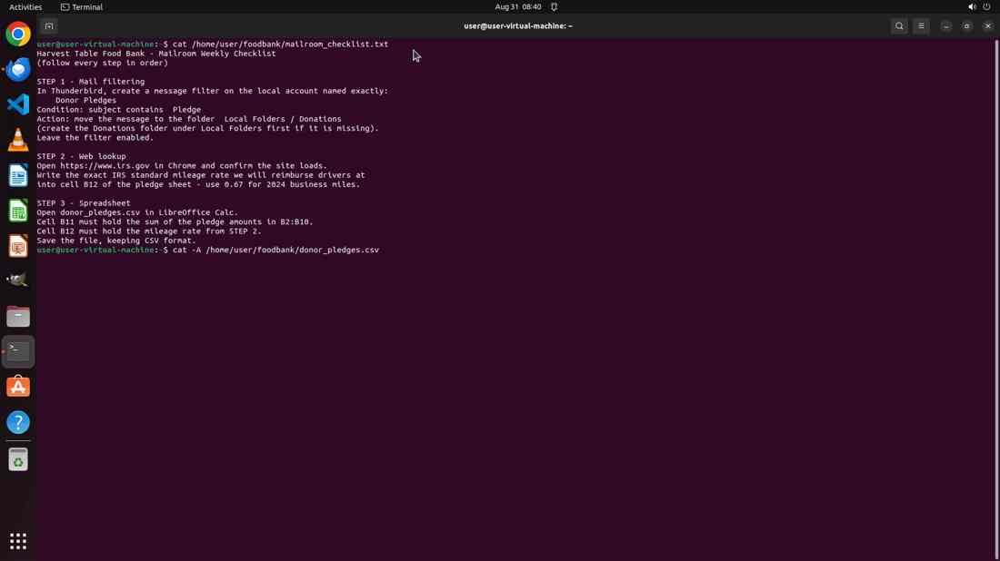
step 7 00:40:48
THINKINGThe command is typed but output not yet shown (the previous cat needed an explicit Enter too). It seems the type action's trailing newline doesn't submit in this terminal; I need to press Enter. Let me press Enter and screenshot.
EXECUTED (pyautogui in VM)pyautogui.press("return")
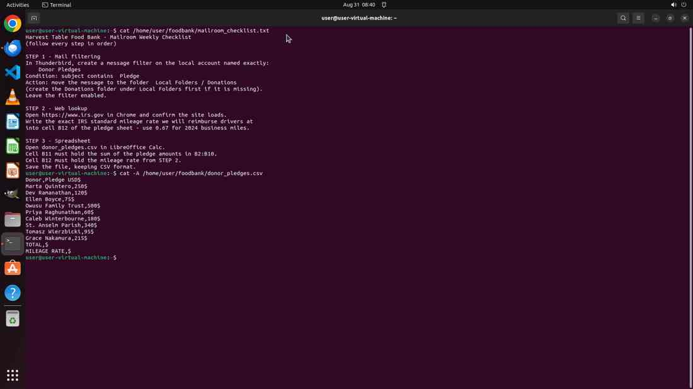
step 8 00:41:18
THINKINGNow I can see the CSV structure:
Row 1: Donor, Pledge USD (header)
Row 2: Marta Quintero, 250
Row 3: Dev Ramanathan, 120
Row 4: Ellen Boyce, 75
Row 5: Owusu Family Trust, 500
Row 6: Priya Raghunathan, 60
Row 7: Caleb Winterbourne, 180
Row 8: St. Anselm Parish, 340
Row 9: Tomasz Wierzbicki, 95
Row 10: Grace Nakamura, 215
Row 11: TOTAL, (blank) → B11 should be sum of B2:B10
Row 12: MILEAGE RATE, (blank) → B12 = 0.67
So B2:B10 = 250,120,75,500,60,180,340,95,215. Let me sum: 250+120=370; +75=445; +500=945; +60=1005; +180=1185; +340=1525; +95=1620; +215=1835. So B11 = 1835.
But I'll enter =SUM(B2:B10) in Calc which will compute 1835 and, when saved as CSV, write 1835. Good.
Now the plan:
STEP 1 (Thunderbird): Need to create a filter. But Thunderbird currently shows "Account Setup" with no account configured. The checklist says "create a message filter on the local account". Local Folders exist even without an email account. I need to open Thunderbird's main window / filter manager. The account setup wizard is blocking. I may need to cancel it or it might already have a local account. Let me proceed to Thunderbird.
Let me do STEP 1 first. I'll switch to Thunderbird. The Thunderbird window is behind. Let me click on the Thunderbird taskbar / the window. Actually the terminal is maximized covering everything. Let me switch to Thunderbird via Activities or click its icon. The Thunderbird window title was "Account Setup - Mozilla Thunderbird". Let me click the Thunderbird icon in the dock (second from top, blue bird at ~22,89).
Let me start with STEP 1. First switch to Thunderbird.
ACTIONThe CSV structure is clear:
- B2:B10 = 250, 120, 75, 500, 60, 180, 340, 95, 215 (sum = 1835) → B11
- B12 = mileage rate (0.67)
Now I'll begin STEP 1 (Thunderbird filter). Let me switch to Thunderbird.
EXECUTED (pyautogui in VM)pyautogui.click(32, 130)
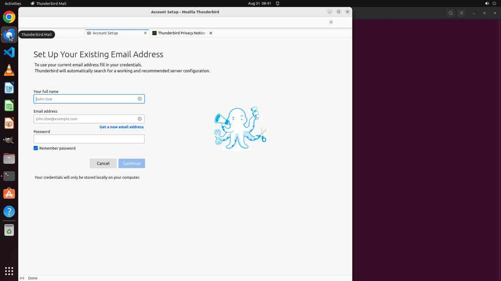
step 9 00:41:29
THINKINGThunderbird is showing the Account Setup wizard (no account configured yet). To create a filter on the local account, I don't need an email account — Local Folders exist independently. I should cancel this setup wizard to get to the main Thunderbird window. Clicking "Cancel" should dismiss the account setup and open the main window with Local Folders available. Let me maximize the window first for easier interaction, then Cancel.
Actually, let me just click Cancel to get to the main window. Then maximize.
ACTIONI'll dismiss the account setup wizard to reach the main Thunderbird window (Local Folders exist independently of any email account).
EXECUTED (pyautogui in VM)pyautogui.click(392, 625)
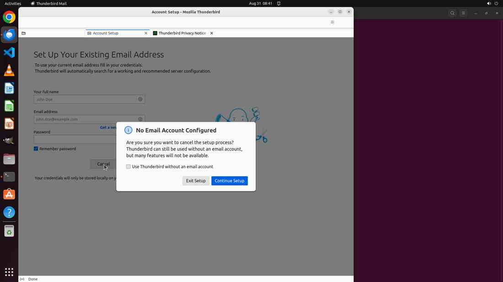
step 10 00:41:43
THINKINGA dialog appeared: "No Email Account Configured - Are you sure you want to cancel the setup process? Thunderbird can still be used without an email account..." There's a checkbox "Use Thunderbird without an email account" and buttons "Exit Setup" and "Continue Setup".
I want to use Thunderbird without an email account (to access Local Folders and create the filter). I should check "Use Thunderbird without an email account" and then click "Exit Setup" to go to the main window. Actually the checkbox enables it; then "Exit Setup" would exit the setup and show main window. Let me check the checkbox first, then click Exit Setup.
ACTIONI'll opt to use Thunderbird without an email account so I can access Local Folders, then exit setup.
EXECUTED (pyautogui in VM)pyautogui.click(747, 689)
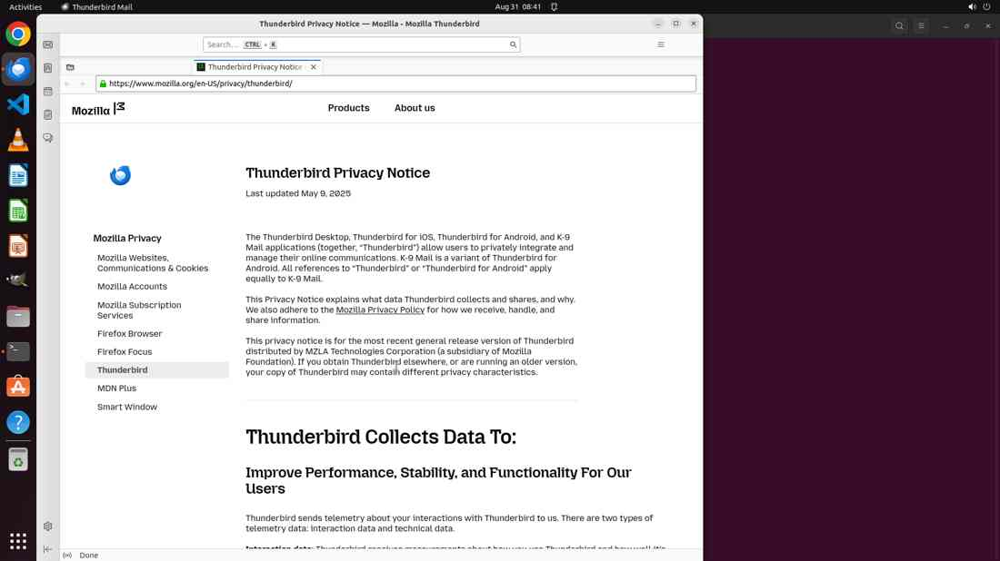
step 12 00:42:05
THINKINGNow I'm in the main Thunderbird window showing a Privacy Notice tab. Let me maximize this window for easier work, then navigate to the filters. First maximize.
ACTIONI'm now in the main Thunderbird window. Let me maximize it for easier interaction.
EXECUTED (pyautogui in VM)pyautogui.click(1299, 44)
step 13 00:42:17
THINKINGWindow is maximized. The left folder pane appears empty (no account tree visible) since we're viewing a web tab. To create a filter on the local account, I'll go through the hamburger menu (top-right) → Tools → Message Filters. Let me click the hamburger menu at top-right (1224, 57).
ACTIONNow I'll open the message filters. Let me use the main menu (hamburger) at the top right.
EXECUTED (pyautogui in VM)pyautogui.click(1616, 254)
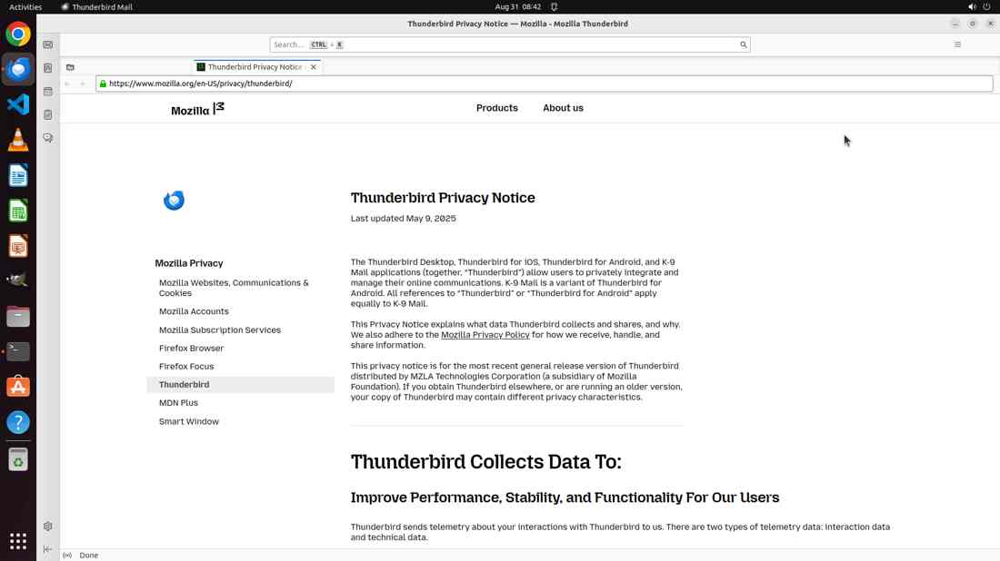
step 16 00:42:58
THINKINGThe menu closed but no filter dialog appeared. Perhaps the filter dialog opened as a separate window behind, or it didn't open because there's no mail account/folder selected. Actually, since there's no email account, the "Message Filters" might require selecting an account first. But Local Folders should exist. Let me take a screenshot to check if a dialog opened (it might be loading).
THINKINGNo filter dialog appeared. The left folder pane is empty — there's no account tree visible. This is the problem: "Message Filters" opens the filter manager for the *selected account/folder*. Without a mail account, there's no default folder, and the left pane is empty. Also, the current active tab is a web page (Privacy Notice), not a mail folder.
The checklist says "create a message filter on the local account". Local Folders should exist even without an email account. But the folder pane appears empty. Perhaps I need to check the folder pane. The left pane area (60-200px) is empty white. There might not be a "Local Folders" shown.
Actually, in Thunderbird, Local Folders always exists as an account. But the pane may be collapsed or the web tab is covering the mail layout. When a web tab is active, the mail 3-pane (folder list, message list) may be hidden. Let me check if there's a mail tab. The tab bar shows only "Thunderbird Privacy Notice".
I think the folder pane is there but empty because we're on a web tab. Let me look — the leftmost icons (mail, address book, calendar, tasks, chat) at x=60. Clicking the Mail icon (envelope at 60,57) should switch to the mail view showing the folder tree. Let me click that.
ACTIONThe filter dialog didn't open — the active tab is a web page, so there's no mail folder context. Let me switch to the Mail view first by clicking the Mail icon in the left panel.
THINKINGNow I'm in the Mail (Home) view. But the left folder pane is empty — there's a "New Message" button and a folder tab icon at top-left (87, 87) but no account list showing "Local Folders". This suggests Local Folders may not be shown because there's no mail account. Actually the folder pane normally lists "Local Folders" at the top even without accounts. Here it's empty.
Hmm. The empty left pane (below New Message) suggests no folders/accounts are present. In a fresh Thunderbird with no account, "Local Folders" should still exist. But maybe the folder pane needs the folder tab selected. There's an icon at (87, 87) that looks like a folder tab toggle.
Actually the issue: without any email account, Thunderbird may not show Local Folders in the folder pane by default in this version. But Local Folders always exists in the profile. Let me try to access it.
The task says "on the local account" and "create the Donations folder under Local Folders first if it is missing". So Local Folders must be accessible. Let me look more carefully - maybe the folder pane just needs me to expand. Let me try clicking on the area where Local Folders would be. But it's empty.
Alternatively, maybe I should just open Message Filters again now that I'm in Mail view. Let me try Tools → Message Filters again. It should now work since I'm in the mail context. Let me open the hamburger menu → Tools → Message Filters.
Actually, before that, the folder tree being empty is concerning for creating the Donations folder and selecting it as destination. Let me first try to reveal Local Folders. Let me right-click in the empty folder pane area to see context menu options.
ACTIONI'm in the Mail view now, but the folder pane appears empty. Let me right-click in the folder pane area to check for Local Folders and context options.
EXECUTED (pyautogui in VM)pyautogui.rightClick(224, 372)
step 19 00:43:53
THINKINGNo context menu appeared. The folder pane is genuinely empty — no accounts, no Local Folders visible. This is a fresh profile with no account. The web tab "Thunderbird Privacy Notice" is in the tab bar but the folder pane is empty.
I need to reveal Local Folders. In Thunderbird, Local Folders is a special account. It might be hidden when no account exists, but there should be a way. Let me check Account Settings (hamburger → Account Settings) to see if Local Folders is listed there, which would confirm it exists and let me create the Donations subfolder.
Actually, a cleaner approach: The folder pane top has a small icon at (87, 87) which might be a "toggle folder pane" or it could be a collapsed Local Folders. Let me look — it's a folder-like icon. Let me click it. Actually it might just be a decorative tab.
Let me reconsider. The most reliable path: Open Account Settings to find Local Folders, and I can create the "Donations" folder from there or from the folder pane once it appears. Let me open hamburger → Account Settings.
ACTIONThe folder pane is empty. Let me open Account Settings to locate Local Folders and manage folders.
EXECUTED (pyautogui in VM)pyautogui.click(1622, 347)
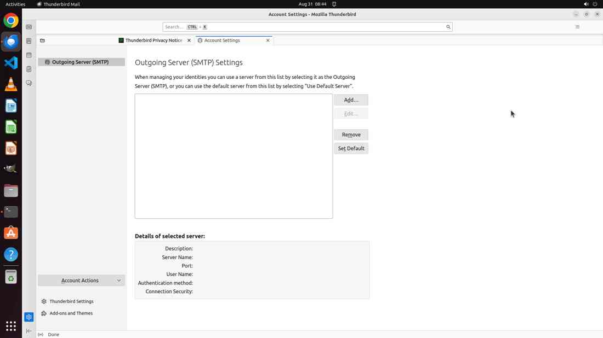
step 21 00:44:23
THINKINGAccount Settings shows only "Outgoing Server (SMTP)" in the left tree, plus "Thunderbird Settings" and "Add-ons and Themes". There's no email account and no "Local Folders" listed in the account tree. This confirms there's no Local Folders account visible.
Hmm, but Local Folders should always exist. In this fresh setup it may be that Local Folders isn't created until needed, or it's simply not shown because there's no mail account at all.
To create a filter "on the local account" and a "Donations folder under Local Folders", I likely need Local Folders to exist in the folder pane. The typical way: Local Folders appears in the folder pane automatically. But here the pane is empty.
Let me reconsider — perhaps I need to actually set up a local account, OR the folder pane is just hidden. Let me close Account Settings and check the folder pane more carefully. Actually, wait — in the Mail view, the left folder pane was completely empty. That's unusual.
Let me try the "Account Actions" dropdown at the bottom-left which may have "Add Other Account" or options. Actually a better approach: There might be a way to show Local Folders.
Actually, I recall that in Thunderbird, when you choose "use without email account," it does create a "Local Folders" account. But maybe it's not showing because the folder pane collapsed. Let me close this settings tab and re-examine.
Actually, let me reconsider the whole approach. The folder pane being empty is the blocker. Let me close Account Settings and look at the folder pane. Maybe I need to scroll or the "Local Folders" is there but the pane width. Let me close this tab first.
Actually, a more direct route: The "Account Actions" menu. Let me click it to see options — it might let me add a Local Folders or there may be something. But more importantly, I realize Local Folders should be created. Let me just close settings and go back to mail view, then try Tools→Message Filters which is the actual requirement. The filter manager has an "Account" selector dropdown at top where I can pick which account's filters to edit. Even if the folder pane is empty, the filter dialog might let me select "Local Folders" and set destination.
Let me close Account Settings tab and go to the mail/home tab, then open Message Filters.
ACTIONAccount Settings shows no email account and no Local Folders in the tree. Local Folders may not have been created. Let me close this and check the folder pane in the main mail view, where I can create it.
EXECUTED (pyautogui in VM)pyautogui.click(853, 126)
step 22 00:44:34
THINKINGThe folder pane is empty. The "New Message" button and a small folder icon (87,87) are there. There's a collapsed left sub-panel with a small folder icon at top (87,87). This might be the collapsed folder pane. Let me look: there's a vertical divider around x=245 separating the left folder pane from the message list. The left pane (60-245) contains only "New Message" button and an icon.
I think the real issue is that Local Folders account isn't showing. Let me try a different, reliable approach: create the filter via the Message Filters dialog directly. That dialog has an account dropdown at top. Even without the folder pane showing, I can select the account and set up the filter. For the destination "Local Folders / Donations", the filter's "Move Message to" folder picker should list folders including Local Folders. And I can create the Donations folder from within that picker if needed.
But first, to have Local Folders exist, let me try creating it. Actually, the cleanest: open Message Filters dialog and see what accounts/folders are available. Let me open hamburger → Tools → Message Filters now (I'm in mail context).
ACTIONLet me open the Message Filters dialog directly (now in mail context) and see what accounts and folders are available.
EXECUTED (pyautogui in VM)pyautogui.click(1616, 254)
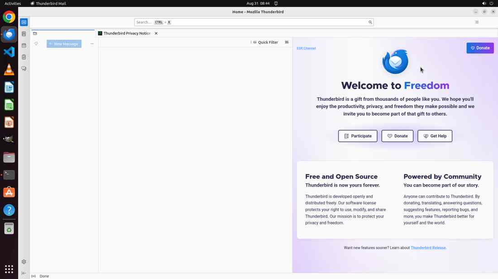
step 25 00:45:16
THINKINGThe Message Filters dialog did not open. This strongly indicates that there is NO account (no Local Folders account) to attach filters to. In Thunderbird, "Message Filters" opens a dialog scoped to an account. With zero accounts configured, there's nothing to open.
So the core blocker: I need a "local account" (Local Folders) to exist. The task explicitly says "on the local account" and "create the Donations folder under Local Folders first if it is missing". This implies Local Folders should be present. It's not, because no account was ever set up.
I need to create Local Folders / a local account. How? In Thunderbird, "Local Folders" is auto-created when you set up any account, OR I can create it via "New Account" → there may be an option. Actually the standard way to get Local Folders without email: Account Settings → Account Actions → "Add Other Account"? No.
Actually, the most reliable way: Local Folders gets created the moment you have any mail. But there's a known method: the folder pane's "Local Folders" appears automatically in a normal profile. The fact it's missing here suggests this is a stripped profile.
Wait — maybe I'm wrong that it's missing. Let me reconsider: The folder pane (left, ~60-245px) shows only "New Message". But maybe the folder pane is in a collapsed/minimal state. There's a small icon at (87, 87) — a folder icon. And the area to its left at (92,111) has a small envelope-like icon.
Let me try clicking the folder icon at (87, 87) — it might expand Local Folders or open a "New Folder" dialog.
Actually, let me step back and think about how to create Local Folders. The cleanest GUI approach in Thunderbird:
- Go to "New Account" (hamburger). In the setup, choosing an IMAP/POP would create an account which also creates Local Folders. But that requires email.
Alternatively, I recall that in modern Thunderbird, if you go to Account Settings and the only thing is SMTP, you can use "Account Actions" → "Add Other Account" → "Local Folders"? Not sure that exists.
Let me reconsider whether Local Folders actually is present but just not rendered. Let me click on the folder icon at top of the folder pane (87,87) to see.
ACTIONThe filter dialog won't open because no account exists yet. I need Local Folders to be present. Let me examine the folder pane — I'll click the small folder icon at the top of it.
EXECUTED (pyautogui in VM)pyautogui.click(128, 128)
step 26 00:45:31
THINKINGThat icon just toggled/collapsed a small sub-panel; no Local Folders. The folder pane is genuinely empty.
I need to create Local Folders. The reliable GUI method in Thunderbird is via "New Account". When you start "New Account" and it asks for email, but there's an option at the bottom or a way to set up just local folders. Actually, the standard "Set Up Account" flow ends with account type selection. But Local Folders specifically...
Let me reconsider. Actually the simplest and most robust way to create a "Local Folders" account in Thunderbird is to have any account, OR use the "Import" which isn't ideal.
Wait — there IS a clean way. In Thunderbird's account setup, after the email entry page, there's a link. But more directly: Account Settings → "Account Actions" dropdown → there's "Add Other Account" which offers options including "Add Feed Account", "Add Newsgroup Account", etc. Not Local Folders.
Hmm. Let me reconsider the actual state. Maybe Local Folders DOES exist but the folder pane just isn't showing it because the pane is very narrow / collapsed. The divider between left pane and message list is at ~245. The pane width is fine.
Actually, I wonder if the folder pane is empty because Thunderbird hasn't finished initializing, or because we chose "use without email account" which in some versions doesn't create Local Folders.
The most reliable approach: create an email account setup won't work (no real server). But actually I don't need a real server — I can create a local account. Let me try "New Account" and look for a "Local Folders" option. Let me open hamburger → New Account.
ACTIONThe folder pane is empty — Local Folders isn't present. Let me try creating it via "New Account" to see available account types.
EXECUTED (pyautogui in VM)pyautogui.click(1835, 83)
step 27 00:45:54
THINKINGLet me reconsider before clicking New Account. Actually, the empty folder pane might just be because there's no mail account, and Thunderbird DOES have Local Folders but hides it when there are zero mail accounts in some versions.
Let me think about the most reliable path. Actually I recall now: In Thunderbird, "Local Folders" is always present once any account exists, and it's created on first run. But when you explicitly "use Thunderbird without an email account," it may NOT create Local Folders.
The cleanest robust way to get Local Folders: create a POP3 or IMAP account with dummy settings (doesn't need to connect). But that's messy.
Actually — a much better idea: Account Settings → "Account Actions" dropdown. In Thunderbird, Account Actions includes "Add Other Account" → and among options is "Local Folders"? Let me actually verify by exploring. But I've seen the Account Settings tree only had SMTP.
Wait, let me reconsider even more fundamentally. Perhaps the reason "Message Filters" didn't open is NOT that there's no account, but that a web tab was focused. Actually I was in the Mail (Home) view when I clicked it the second time, and still nothing opened.
Let me just try "New Account" to see if there's a local account option. Click New Account.
EXECUTED (pyautogui in VM)pyautogui.click(1610, 116)
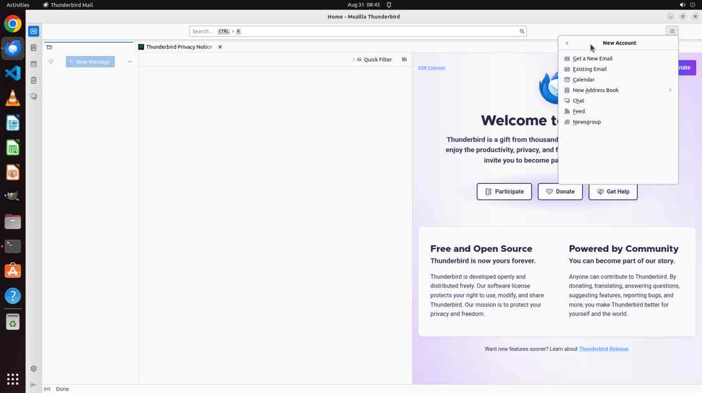
step 28 00:46:08
THINKINGNew Account submenu: Get a New Email, Existing Email, Calendar, New Address Book, Chat, Feed, Newsgroup. No explicit "Local Folders" option.
The cleanest way to get Local Folders: create a "Get a New Email" account. The setup flow asks for email; it will try to configure servers. But even if I don't complete it, or I use "Configure manually", creating the account also creates Local Folders. However, an incomplete/dummy account is messy and might prompt for connection.
Actually, a much simpler realization: I could just create a Feed or Newsgroup account — but those don't create Local Folders either.
Let me reconsider. The requirement is a filter "on the local account". In Thunderbird, "Local Folders" is the local account. There's no way around needing it to exist.
The most reliable way to create Local Folders without a real mail server: The "Get a New Email" flow. When you enter a name+email and it can't autodetect, it offers "Configure manually" where you enter incoming/outgoing servers. If I just fill dummy values and click "Done"/"Continue", Thunderbird creates the account (it won't connect until you fetch). Critically, creating ANY mail account also automatically creates the "Local Folders" account. Then I can create the Donations subfolder under Local Folders and set up the filter.
But wait — do I even need the mail account to remain? The task only cares about the filter on Local Folders and the folder. Having a dummy email account as a side effect should be acceptable, but it might be undesirable. However, there's no cleaner GUI path to Local Folders.
Actually, reconsider: Maybe I'm overcomplicating. Let me close this and just try creating the filter again but this time check if a dialog opened behind the main window. When I clicked "Message Filters" earlier, maybe a dialog opened but behind the main window (I only saw the main window in screenshots because the dialog might be a separate top-level window that appeared off to the side or was immediately behind). But the title bar always said "Home - Mozilla Thunderbird", and a filter dialog is modal/separate — if it opened, the title bar of the active window would change or I'd see it. It didn't.
Let me go with creating a local email account to bring Local Folders into existence. Actually, the safest: "Get a New Email" → enter details → "Configure manually" → dummy servers → done. Let me do it.
Actually, let me reconsider one more time whether Local Folders truly is absent. The fact that Account Settings tree showed ONLY "Outgoing Server (SMTP)" and no "Local Folders" node strongly confirms Local Folders doesn't exist yet. Normally Local Folders appears in Account Settings tree. So it's absent.
Decision: Create a dummy mail account to trigger Local Folders creation. Click "Get a New Email".
ACTIONThere's no direct "Local Folders" option, but creating any mail account automatically creates the "Local Folders" account I need. Let me start a new email account (with dummy details; it needn't connect).
EXECUTED (pyautogui in VM)pyautogui.click(1616, 158)
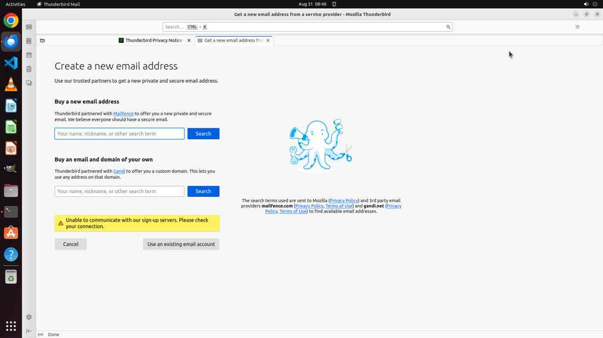
step 29 00:46:23
THINKINGThis page is about buying a new email address from providers (Mailfence, Gandi) — not what I want. There's a "Use an existing email account" button which leads to the standard setup where I enter name/email and it offers "Configure manually". That's the path to create an account and thus Local Folders. Let me click "Use an existing email account".
ACTIONThis is the "buy a new address" page. I'll click "Use an existing email account" to reach the manual setup where I can create the account (which will also create Local Folders).
EXECUTED (pyautogui in VM)pyautogui.click(570, 777)
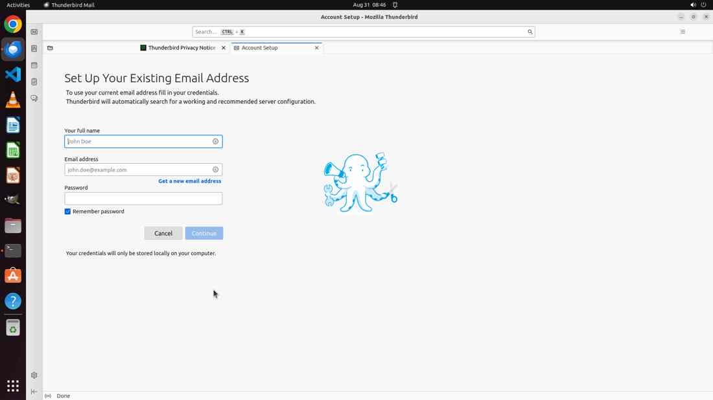
step 30 00:46:41
THINKINGNow the "Set Up Your Existing Email Address" form. I'll enter dummy name and email, then Continue. It will try to autodetect servers and fail (no network to that domain), then offer "Configure manually". Let me fill:
- Full name: Food Bank
- Email: mailroom@foodbank.org
- Password: (leave blank? Continue may be disabled without password). Let me put a dummy password too.
Actually, I want to minimize side effects, but I have to create the account. Let me enter a plausible local name. I'll use "Mailroom" and mailroom@foodbank.local. Password dummy "password".
Then Continue. It'll fail autodetect and show "Configure manually". I'll set POP3 with dummy server. Then Done.
Let me fill the fields.
ACTIONI'll fill in dummy credentials to create the account (which creates Local Folders). It won't actually connect.
EXECUTED (pyautogui in VM)pyautogui.click(382, 380)
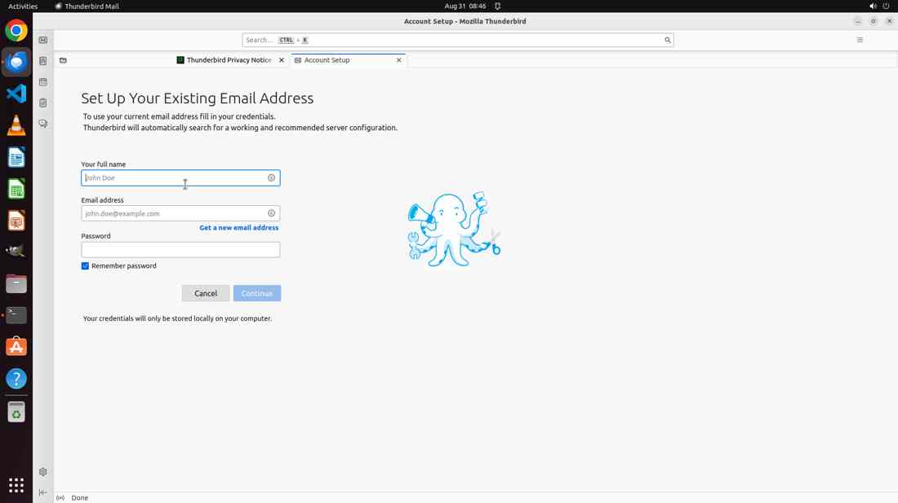
step 31 00:46:48
THINKINGThe full name field is focused. I'll type the name, then Tab to email, type email, then Tab to password, type password. Then Continue. Let me batch the typing.
TOOL CALL<tool_call>
<function=computer_use>
<parameter=action>
type
</parameter>
<parameter=text>
Food Bank Mailroom
</parameter>
</function>
</tool_call>
EXECUTED (pyautogui in VM)pyautogui.typewrite("Food Bank Mailroom")
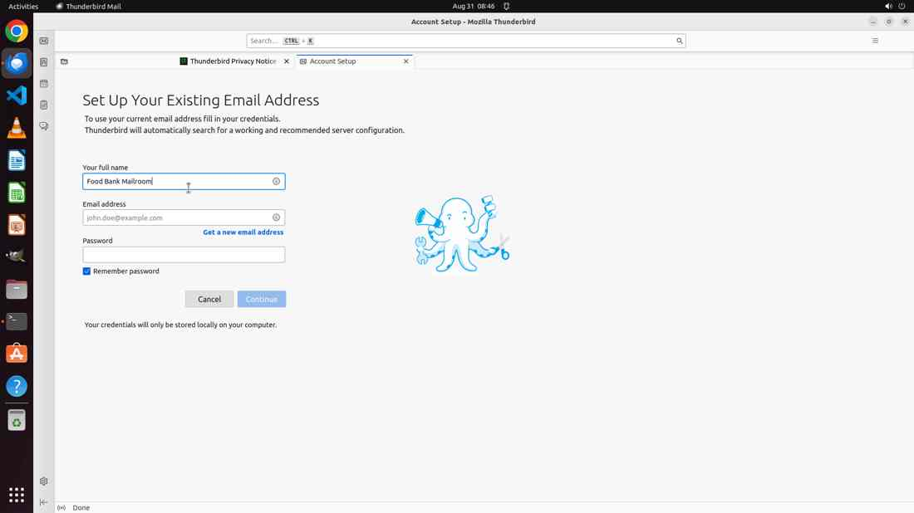
step 32 00:46:56
THINKINGName entered. Now click email field, type email, then password field, type password. Then Continue. Let me batch: click email field, type email, click password field, type password.
EXECUTED (pyautogui in VM)pyautogui.click(382, 455)
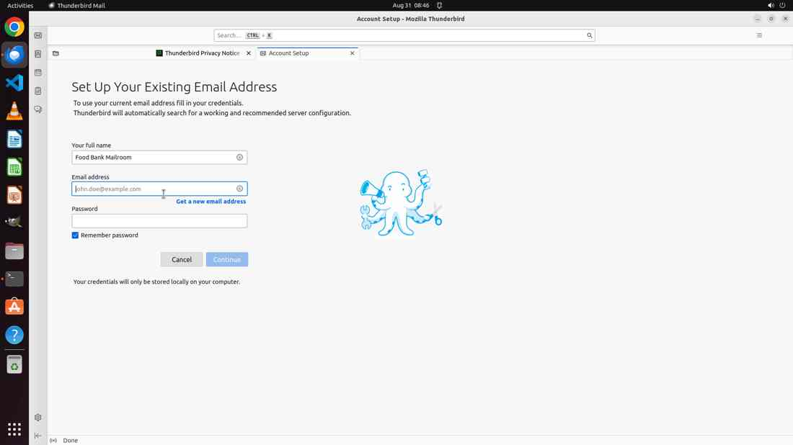
step 33 00:47:09
THINKINGEmail field focused. I'll type a dummy email, then click password and type a dummy password. Using a .local domain so autodetection will fail fast (no network resolution). Let me batch: type email, click password, type password.
EXECUTED (pyautogui in VM)pyautogui.typewrite("mailroom@foodbank.local")
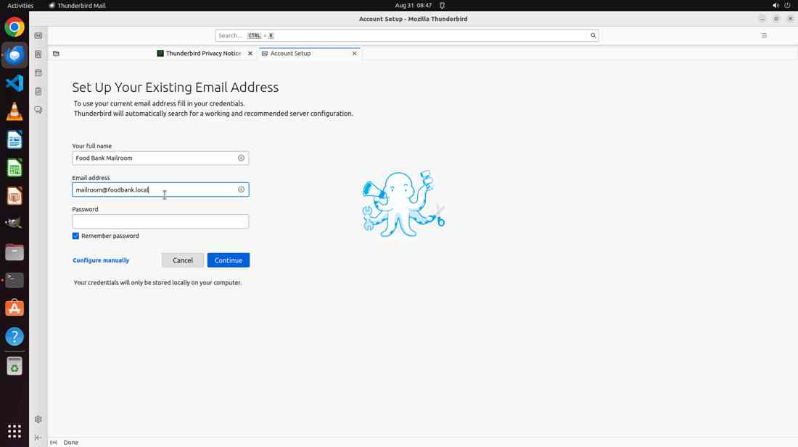
step 34 00:47:19
THINKINGNow a "Configure manually" link appeared. I'll use that to set dummy server settings directly, avoiding the autodetection attempt. Let me click "Configure manually". I'll still add a password first so the form is valid. Let me click the password field, type a dummy password, then click Configure manually.
ACTIONThe "Configure manually" link appeared. Let me add a password then open manual configuration.
EXECUTED (pyautogui in VM)pyautogui.click(382, 531)
step 35 00:47:33
THINKINGPassword field focused. I'll type a dummy password, then click "Configure manually" to jump to the manual server configuration screen (bypassing autodetection).
EXECUTED (pyautogui in VM)pyautogui.click(240, 627)
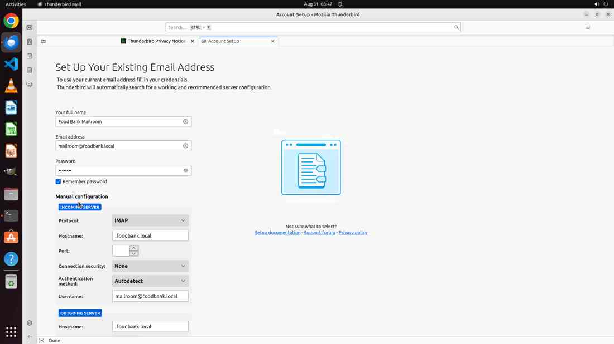
step 37 00:48:04
THINKINGManual configuration is showing. I need to fill in the hostnames so the "Done" button enables. The hostnames are prefilled with ".foodbank.local" but the "Done" button (further down) may be disabled until valid. Let me set:
- Incoming: Protocol POP3 (to avoid IMAP needing a real connection), Hostname mail.local, Port 110, Connection security None, Auth Normal password or No password, Username mailroom.
- Outgoing: Hostname mail.local, Port 25.
Actually, to minimize the chance Thunderbird tries to verify, I should just fill in hostnames. Let me set the incoming hostname to "localhost" and protocol POP3. Actually the simplest to make "Done" enable: just provide hostnames and ports.
Let me change Protocol to POP3 to be safe. Actually IMAP vs POP3 doesn't matter much since we won't connect. But POP3 is simpler. Let me set the incoming hostname field first — it shows ".foodbank.local" (greyed placeholder). Let me click it and type a host. I'll use "localhost".
Let me set:
1. Click Protocol dropdown → POP3
2. Incoming hostname: localhost
3. Incoming port: 110
4. Incoming auth: "No password" (to avoid requiring)
5. Outgoing hostname: localhost
6. Outgoing port: 25
Then scroll down to find "Done" button.
Actually, to reduce steps and risk, I'll just fill hostnames and ports and leave protocol IMAP. The key is enabling "Done". Let me change incoming hostname to "localhost", port 143. And outgoing hostname "localhost", port 25.
Let me first set the incoming hostname. Click the incoming Hostname field.
ACTIONManual configuration is shown. I'll fill dummy server details to enable the "Done" button. First, the incoming hostname.
EXECUTED (pyautogui in VM)pyautogui.click(468, 739)
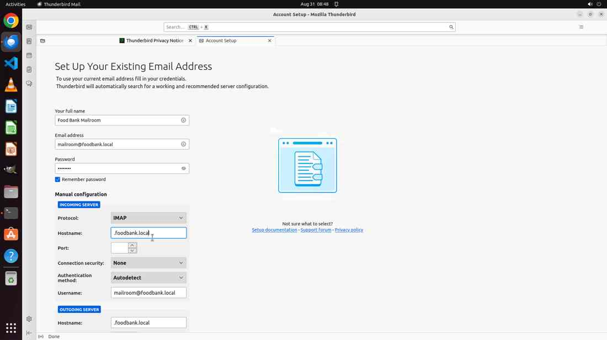
step 38 00:48:15
THINKINGThe incoming hostname field now shows ".foodbank.local" (it was a placeholder but now it's the actual value with cursor). Let me select all and type "localhost" to have a clean hostname. I'll triple-click to select, type localhost, then set port. Actually the field shows ".foodbank.local" which is a valid hostname string already — that's enough to enable Done. But to be safe and avoid any connection attempt to a real DNS, "localhost" is safer. Let me select all and replace.
I'll do: triple_click the field, type "localhost". Then click Port field, type 143.
EXECUTED (pyautogui in VM)pyautogui.typewrite("localhost")
step 40 00:48:45
THINKINGIncoming hostname = localhost. Now set the port to 143. Click the Port field and type 143. The port field is the small box at (258, 520). Let me click it and type.
EXECUTED (pyautogui in VM)pyautogui.click(378, 778)
step 41 00:49:00
THINKINGPort field focused. Type 143. Then I'll handle the outgoing server. The outgoing hostname already shows ".foodbank.local" placeholder; I should set it to localhost too and set port 25. But the outgoing section is below the fold. Let me type 143 first, then scroll down to see outgoing and Done.
EXECUTED (pyautogui in VM)pyautogui.typewrite("143")
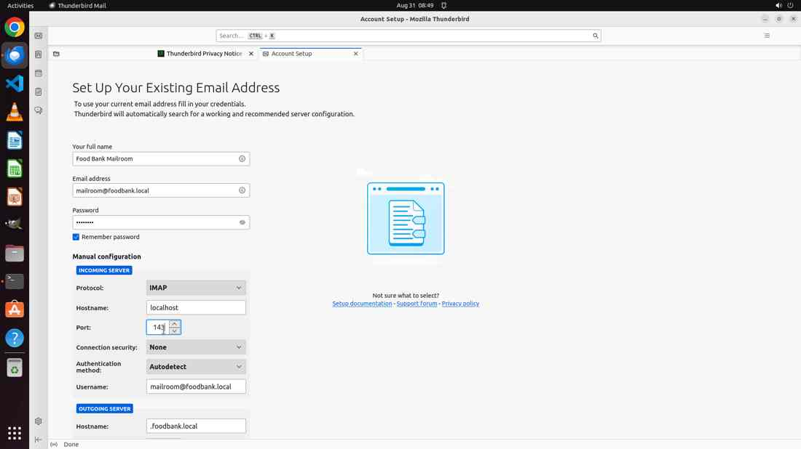
step 42 00:49:16
THINKINGPort = 143. Now the outgoing server. Let me set its hostname to localhost. Click the outgoing Hostname field, select all, type localhost. Then scroll down to find port and Done.
Let me click the outgoing hostname field (313, 681), triple-click to select the placeholder, type localhost.
ACTIONNow I'll set the outgoing server hostname. Let me select its field and type localhost.
EXECUTED (pyautogui in VM)pyautogui.typewrite("localhost")
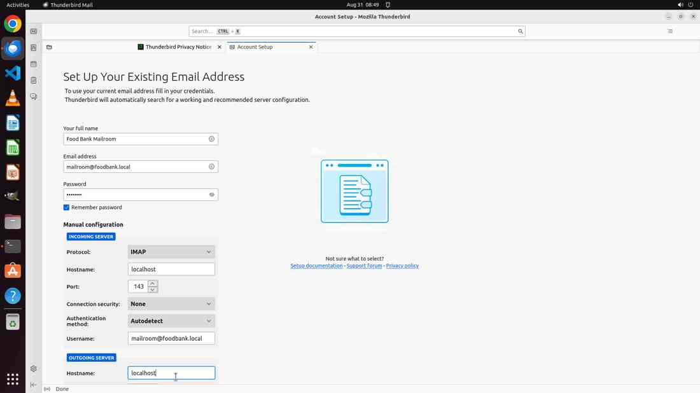
step 44.1 00:49:43
THINKINGBoth hostnames set to localhost. Now scroll down within the manual config to reveal the outgoing port field and the "Done"/"Re-test"/"Cancel" buttons. Let me scroll down in the content area.
ACTIONBoth hostnames are set. Let me scroll down to reveal the outgoing port and the "Done" button.
EXECUTED (pyautogui in VM)pyautogui.moveTo(599, 600)
step 44.2 00:49:46
same model call as the previous action
EXECUTED (pyautogui in VM)pyautogui.scroll(-4)
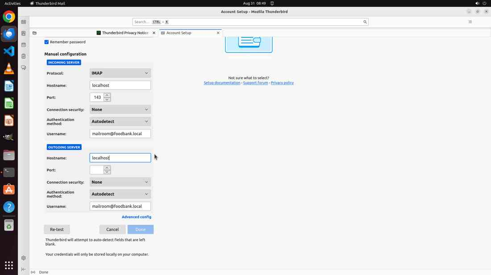
step 45 00:49:57
THINKINGNow I can see the outgoing Port field and the "Done" button (currently greyed/disabled). Let me set the outgoing port to 25. Click the outgoing Port field, type 25. The port field is at (250, 447). Then check if Done enables. It may still be disabled until a port is set. Let me set it.
ACTIONLet me set the outgoing port to 25 to enable the "Done" button.
EXECUTED (pyautogui in VM)pyautogui.typewrite("25")
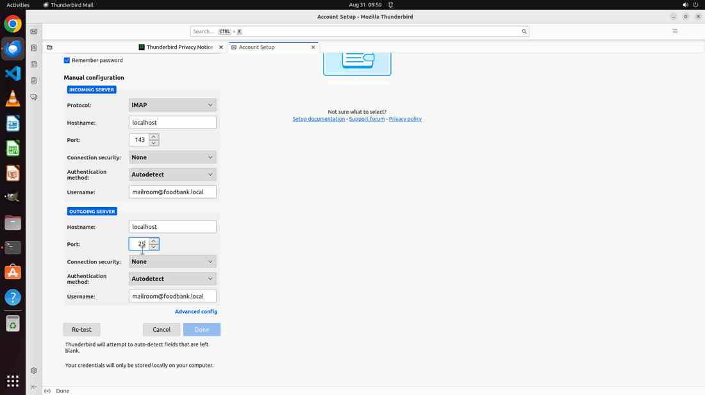
step 47 00:50:26
THINKINGThe "Done" button still appears greyed out. All fields are filled though. Maybe it enables once the port field loses focus (change event). Let me click on a neutral area to blur the field, e.g., click on the "Manual configuration" heading area, then check Done state.
Actually the button color (light blue) vs disabled (grey) — it's still light blue which might actually be enabled? Earlier it was grey "Done". Now it looks light blue, similar to enabled. Hard to tell. Let me click on empty area to blur and re-screenshot.
ACTIONLet me click a neutral area to commit the field value, then check the Done button state.
EXECUTED (pyautogui in VM)pyautogui.click(749, 600)
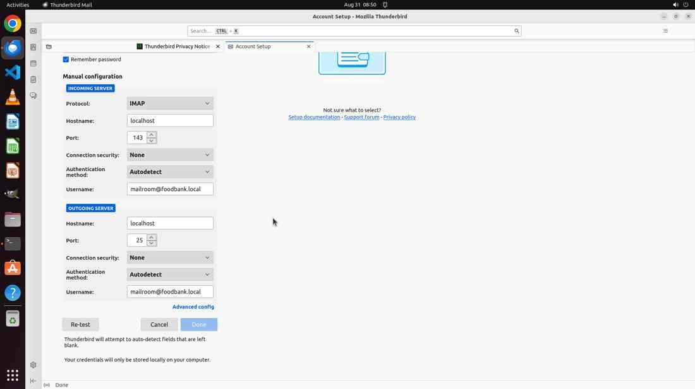
step 48 00:50:41
THINKINGThe "Done" button still looks light-blue/disabled. The "Re-test" is grey too. Maybe the Done button requires that fields are not left blank for autodetection - all are filled. Perhaps the button is actually enabled (light blue is the accent color). In Thunderbird, primary buttons are blue when enabled. "Cancel" is grey. "Done" being light blue suggests it may be enabled but with reduced opacity when the window isn't focused. Let me just click "Done" to create the account.
ACTIONThe fields are filled. I'll click "Done" to create the account.
EXECUTED (pyautogui in VM)pyautogui.click(547, 898)
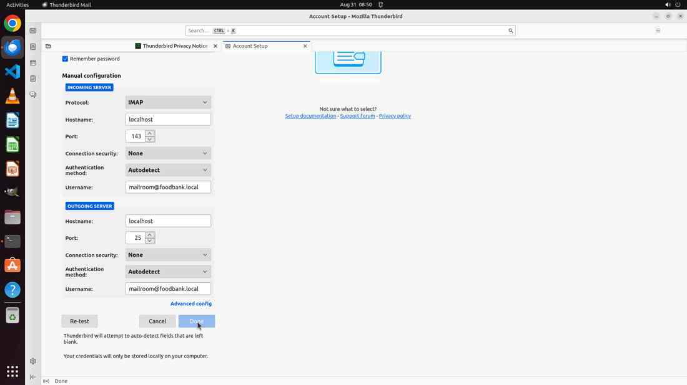
step 49 00:50:57
THINKINGNothing changed after clicking Done — it seems the button is disabled (the click had no effect; the form is unchanged). The "Done" button is disabled. Why? Possibly because the authentication method "Autodetect" requires a valid setup, or the password/username needs matching. Or the button stays disabled until "Re-test" validates. But Re-test would try to connect to localhost and fail.
Actually, in Thunderbird's manual config, the "Done" button is enabled once the required fields (hostnames, ports) are non-empty. It should be enabled now. The light-blue appearance suggests it's actually enabled but styled. Yet clicking did nothing visible.
Wait — maybe the click registered but the account creation is a fast operation that just didn't visibly change because it went to the "Account was set up" success screen which I'd see. It didn't. So the button is disabled.
Let me reconsider why it's disabled. Perhaps the outgoing "Connection security" or "Authentication method" = Autodetect is fine. The likely reason Done is disabled: the username field for outgoing might need to match, or one of the ports is invalid. All look fine.
Alternatively, maybe the button IS enabled and my click missed. Let me try clicking "Re-test" — no, that triggers a connection attempt to localhost which will fail and may show an error but could still let me proceed via "Use Anyway".
Actually, a cleaner path exists: "Advanced config" link. Clicking it creates the account with the entered settings and opens Account Settings — bypassing the test. That's a reliable way to create the account. Let me click "Advanced config".
ACTIONThe "Done" button appears disabled. I'll use "Advanced config", which creates the account with the entered settings and opens Account Settings directly.
EXECUTED (pyautogui in VM)pyautogui.click(530, 848)
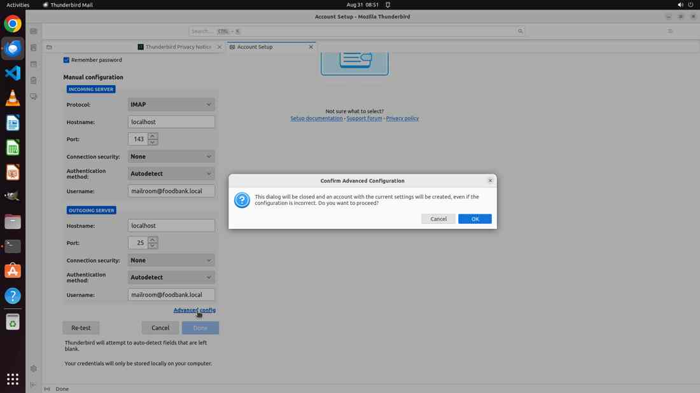
step 50 00:51:09
THINKINGA confirmation dialog appeared: "This dialog will be closed and an account with the current settings will be created, even if the configuration is incorrect. Do you want to proceed?" I'll click OK. This will create the account and Local Folders.
ACTIONA confirmation appeared. I'll click OK to create the account (and Local Folders).